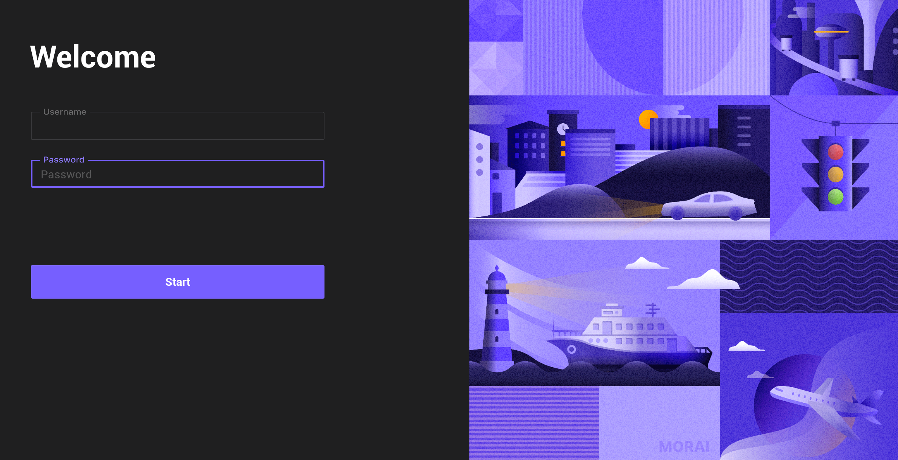
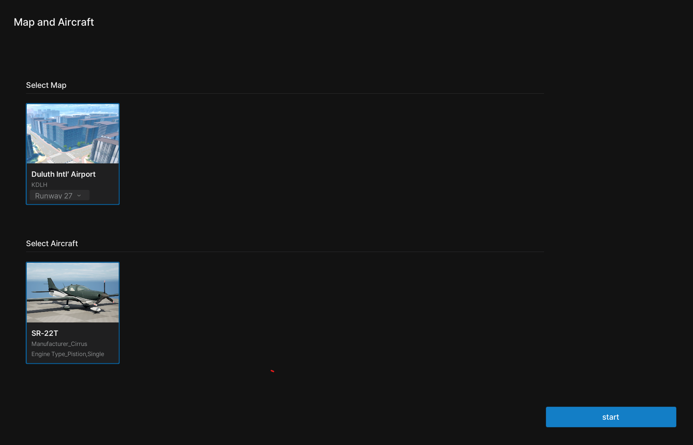

Installation
This section describes the system requirements for installing MORAI SIM: Air and how to run it.
System Requirements
The OS environment in which MORAI SIM: Air can run is as follows.
- Windows 10 or higher
- Ubuntu 18.04 LTS or higher
A version for Ubuntu (Linux) is under development.
To install and run MORAI SIM: Air, the user's system should meet the minimum or recommended specifications.
Minimum specifications
To use the basic functions of MORAI SIM: Air, the following system requirements should be satisfied.
- CPU: Intel i5-9600KF or AMD Ryzen 5 3500X
- RAM: DDR4 16GB
- VGA: NVIDIA GeForce RTX 2060 Super
Recommanded specifications
To use multiple sensors in MORAI SIM: Air, the system requirements below should be satisfied.
- CPU: Intel i9-9900K or AMD Ryzen 7 3700X or higher
- RAM: DDR4 64GB (or higher
- VGA: NVIDIA GeForce RTX 2080 Ti or higher
Running MORAI SIM: Air
Install and run MORAI SIM: Air in the following order.
Step 1: Download MIRAI SIM launcher
Download the MORAI SIM Launcher package in the path below according to the user's OS environment.
- Windows: ' Attachment required'
Step 2: Run the launcher program
1) Run UELauncher.exe from the downloaded package path.
2) On the launcher execution screen as shown below, click Start after entering the Username and Password guided by MORAI.

For details regarding Username and Password information, please contact the MORAI project manager.
Step 3: Select Map and Aircraft
After launcher execution is completed, the following Map and Vehicle screen appears.
After selecting both the map and aircraft model to be used in the simulator, click Start to run the simulator.

The Runway {number} option of Select Map is a spawn point setting that sets the runway facing the direction of '{number}+0' degrees.
Ex) If you select Runway 3, the spawn point is the runway facing a 30 degree direction.
The start button does not appear unless either the map or aircraft model is selected.
Step 4: Check the simulator run
When the MORAI SIM:Air simulator is normally executed, the following simulator execution screen appears.